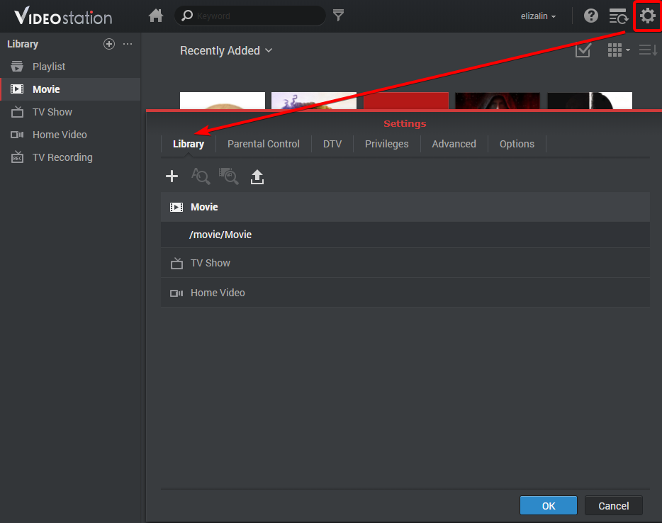
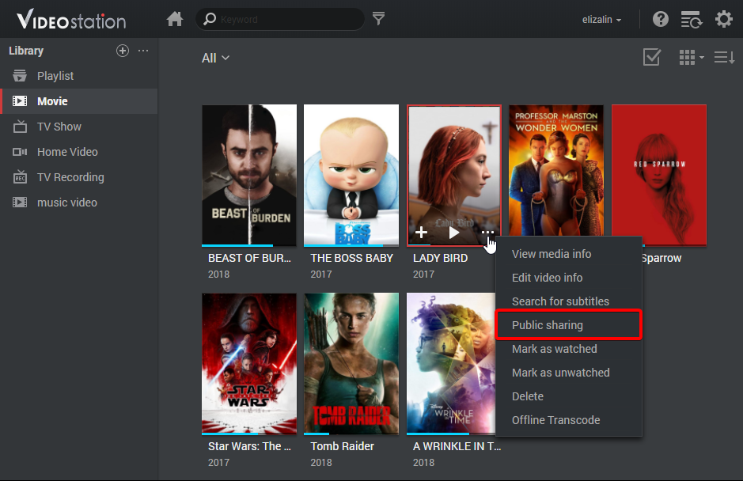

Información general
Con Video Station, puede organizar y clasificar fácilmente sus colecciones de vídeo en distintas bibliotecas predeterminadas o personalizadas para encontrar con mucha más eficiencia el vídeo que busca. Además, reproducir y compartir vídeos puede ser tan fácil y sencillo como unos simples clics.
1. Instalar Video Station
Para instalar Video Station, diríjase al Centro de paquetes, busque Video Station y, a continuación, haga clic en Instalar.

2. Almacenar y clasificar vídeos en bibliotecas predeterminadas
Video Station ofrece tres bibliotecas predeterminadas como se indica en el panel izquierdo: Película, Serie de TV y Vídeo casero. Para asegurarse de que sus vídeos se pueden indexar y clasificar, primero necesita agregar una carpeta de vídeo para cada biblioteca y, a continuación, almacenar los archivos en la carpeta correspondiente. De forma predeterminada, se crean tres carpetas de vídeo en la carpeta compartida vídeo para cada una de las bibliotecas predeterminadas: película, serie de TV y vídeo casero. Sin embargo, además de estas tres carpetas, también puede hacer lo siguiente para agregar más carpetas de vídeo a las bibliotecas.
El sistema buscará automáticamente metadatos relacionados y otra información (p. ej., imágenes del póster) para dos tipos de vídeo (películas y programas de televisión) de Internet. Por lo tanto, para garantizar que sus vídeos puedan sincronizarse con la información correcta, se recomienda encarecidamente que los vídeos coincidan con el tipo de vídeo especificado en sus respectivas bibliotecas.
Agregar carpetas de vídeo a las librerías predeterminadas
- Vaya a Configuración > Biblioteca. 
- Haga clic en el icono Agregar carpeta para seleccionar una carpeta del Synology NAS y seleccione la biblioteca de destino. Puede agregar hasta 100 carpetas de vídeo para una biblioteca, pero una vez que selecciona una carpeta, ni la carpeta ni sus subcarpetas pueden seleccionarse para otra biblioteca.
- Almacene los archivos de vídeo en las carpetas de vídeo para clasificarlos en sus bibliotecas correspondientes.
- Ya puede buscar y ver en las bibliotecas los vídeos que desee.

3. Almacenar y clasificar vídeos en bibliotecas personalizadas
Además de las tres bibliotecas predeterminadas, a las que puede acceder cualquiera de forma predeterminada, usted como admin de DSM y los usuarios que pertenezcan al grupo de administradores también pueden crear bibliotecas personalizadas y asignar permisos de acceso a ciertos usuarios.
Crear bibliotecas personalizadas
- Vaya a Configuración > Biblioteca y haga clic en el icono "+" para crear una biblioteca.
- Especifique un nombre para la nueva biblioteca, seleccione el tipo de vídeo que desee colocar en la carpeta y, a continuación, seleccione Pública si desea que todos puedan acceder a la misma o Privada para limitar el acceso a determinados usuarios con permisos. Tenga en cuenta que los vídeos que coloque en la carpeta deben coincidir con el tipo seleccionado aquí para garantizar la exactitud de la información de vídeo recopilada de Internet.
- Si selecciona Privada, haga clic en Asignar permisos y, a continuación, marque las casillas para conceder acceso a los usuarios.

4. Reproducción de vídeos
Cuando haya clasificado los archivos de vídeo en diferentes bibliotecas, puede seguir los pasos que se indican a continuación para reproducir los vídeos en Video Station. Se recomienda encarecidamente instalar VLC media player (Windows, Linux) antes en el equipo. Además de reproducir vídeos en su ordenador local, también puede transmitir sus vídeos en DMA compatibles con DLNA/UPnP o dispositivos compatibles con AirPlay para la reproducirlos.
Reproducir vídeos con el reproductor de vídeo integrado
- Seleccione cualquier clip de vídeo que desee reproducir y, a continuación, haga clic en el icono de reproducción de la imagen de vídeo.
- El vídeo debería empezar a reproducirse enseguida. Si no es así, asegúrese de que el formato del vídeo es compatible con el explorador web o de haber instalado el complemento de VLC en el equipo.
- Utilice los botones que aparecen en pantalla y en la barra de progreso del reproductor de vídeo en función de sus necesidades. También puede ajustar el volumen, seleccionar al calidad de la reproducción de vídeo y audio, activar los subtítulos o transmitir el vídeo a otro dispositivo (si procede).


Para obtener información detallada sobre el complemento de VLC y los dispositivos compatibles, consulte Ayuda de DSM > Video Station > Reproducción de vídeo.
5. Compartir vídeos con el público
Con la función de uso público compartido, puede compartir sus vídeos fácilmente con otras personas mediante Video Station y todos los vídeos compartidos tendrán accesibilidad pública para cualquiera que disponga del vínculo.
Compartir vídeos con otras personas
- Vaya a cualquier biblioteca de vídeo y haga clic en Todos en la esquina superior izquierda para ver todos los vídeos de esa biblioteca.
- Haga clic en el icono Modo de selección o mantenga pulsado Ctrl o Mayús para seleccionar varios vídeos. A continuación haga clic en el icono Uso público compartido .
- Si solo ha seleccionado un vídeo para compartir, este se agregará a la colección compartida llamada Vídeos compartidos. Allí podrá administrar individualmente todos los vídeos que haya compartido.
- Si ha seleccionado varios vídeos para compartir, estos se agruparán en una nueva colección compartida.
- Especifique un período de validez si es necesario.
- También puede hacer clic en el icono + de la imagen de la película de destino y, a continuación, en Uso público compartido para agregar el vídeo seleccionado a Vídeos compartidos. 
- Sencillamente copie y pegue el enlace en correos electrónicos, mensajes instantáneos y páginas web para compartir estos vídeos con cualquiera.

6. Organizar y ver vídeos en dispositivos móviles
Para conectarse a Video Station a través de dispositivos móviles, puede descargar DS video con dispositivos iOS/Android con los siguientes códigos QR. Podrá reproducir vídeos y organizar sus colecciones con sus dispositivos móviles y transmitir vídeos a sus DMA o dispositivos AirPlay tanto en casa como en sus desplazamientos.